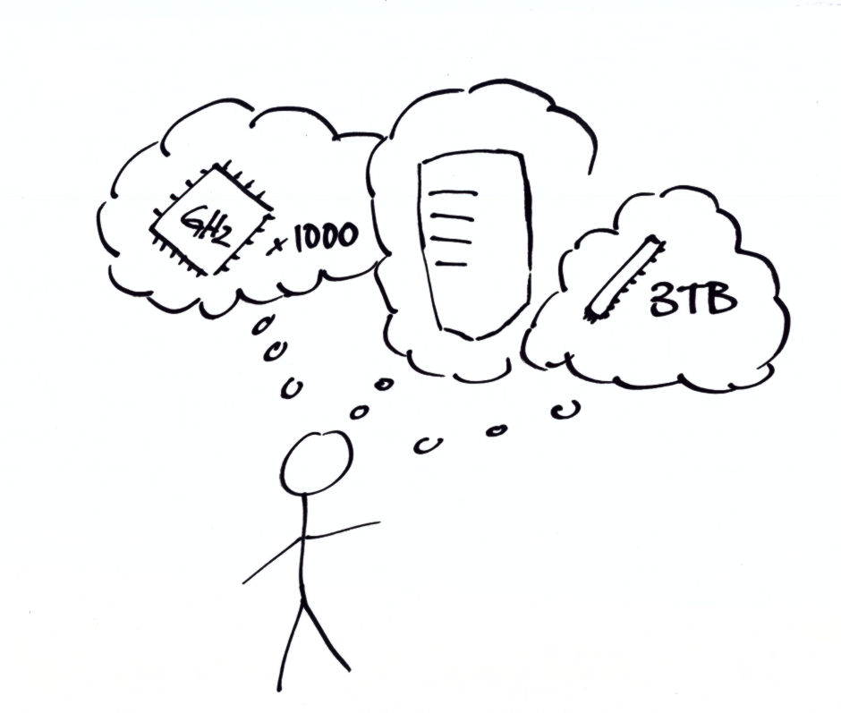

| Command | Description |
|---|---|
| docker run | starts application |
| docker ps | lists containers |
| docker images | lists docker images |
| docker pull | pulls images from registry, e.g., dockerhub.com |
| docker run | runs container based on image |
| docker kill | kills container |
| docker build <dir-with-docker-file> | builds image based on DOCKERFILE |
| docker exec <command> <container> | executes command inside container |
7 Infrastructure
Yes, there is a third area besides your research and carpentry-level programming that I suppose you should get an idea about. Again, you do not have to master hosting servers or even clusters, but a decent overview and an idea of when to use what will help you tremendously to plan ahead. The figure Figure 7.1 shows a simple web application setup that would work well with virtual machines as well as with docker containers.
7.1 Why Go Beyond a Local Notebook?
Admittedly, unless you just always had a knack for Arduinos, Raspberry Pis or the latest beta version of the software you use, infrastructure may be the one area you perceive as distracting, none-of-your-business overhead. So, why leave the peaceful, well-known shire of our local environment for the uncharted, rocky territory of unwelcoming technical documentations and time-consuming rabbit holes?

Performance, particularly in terms of throughput, is one good reason to look beyond desktop computers. Data protection regulations that prohibit data downloads may simply force us to not work locally. Or we just do not want a crashing office application to bring down a computation that ran for hours or even days. Or we need a computer that is online 24/7 to publish a report, website or data visualization.
7.2 Hosting Options
So, where should we go with our project when it outgrows the local environment of our notebooks? This has actually become a tough question because of all the reasonable options out there. Technical advances, almost unparalleled scalability and large profits for the biggest players made modern infrastructure providers offer an incredible variety of products to choose from. Obviously, a description of product offerings in a vastly evolving field is not well suited for discussions in a book. Hence, Research Software Engineering intends to give an overview to classify the general options and common business models.
7.2.1 Software-as-a-Service
The simplest solution and fastest time-to-market is almost always to go for a Software-as-a-Service (SaaS) product – particularly if you are not experienced in hosting and just want to get started without thinking about which Linux to use and how to maintain your server. SaaS products abstract all of that away from the user and focus on doing one single thing well. The shinyapps.io1 platform is a great example of such a service: users can sign up and deploy their web applications within minutes. The shinyapps.io platform is a particularly interesting example of a SaaS product because R developers who come from field-specific backgrounds other than programming are often not familiar with web development and hosting websites. Some of these developers, for whom R might be their first programming language, are suddenly empowered to develop and run online content thanks to the R Shiny web application framework that uses R to generate HTML, CSS and JavaScript based applications. Still, those applications need to be hosted somewhere. This is precisely what shinyapps.io does. The service solely hosts web applications that were created with the Shiny web application framework. This ease of use is also the biggest limitation of SaaS products. A website generated with another tool cannot be deployed easily. In addition, the mere bang-for-buck price is rather high compared to self-hosting as users pay for a highly, standardized, managed hosting product. Nevertheless, because of the low volume of most projects, SaaS is feasible for many projects, especially at a proof of concept stage.
In case you are interested in getting started with Shiny, take a look at the Shiny case study in this book. The study explains basic concepts of Shiny to the user and walks readers through the creation and deployment of a simple app.
SaaS, of course, is neither an R nor a data science idea. Modern providers offer databases, storage calendars, face recognition and location services, among other things.
7.2.2 Self-Hosted
The alternative approach to buying multiple managed services, is to host your applications by yourself. Since – this applies to most users at least – you do not take your own hardware, connect to your home Wi-Fi and aim to start your own hosting provider, we need to look at different degrees of self-hosting. Larger organizations, e.g., universities, often like to host applications on their own hardware, within their own network to have full control of their data. Yet, self-hosting exposes you to issues, such as attacks, that you would not need to worry about as much in a software as a service setting (as long as you trust the service).
Self-hosting allows you to host all the applications you want on a dedicated machine. Self-hosters can configure their server depending on their access rights. Offerings range from root access that allows users to do anything to different shades of managed hosting with more moderated access. Backed by virtual infrastructure, modern cloud providers offer a very dynamic form of self-hosting: their clients can use a web GUIs and/or APIs to add, remove, reboot and shut down nodes. Users can spin up anything from pre-configured nodes optimized for different use cases to containerized environments and entire Kubernetes (K8s) clusters in the cloud. Flexible pricing models allow paying based on usage in a very dynamic fashion.
7.3 Building Blocks
Exactly because of this dynamic described above and the ubiquity of the cloud, it is good to know about the building blocks of modern IT infrastructure.
7.3.1 Virtual Machines
Virtual machines (VMs) remain the go-to building blocks for many set-ups. Hence, university IT, private sector IT, independent hosting providers and online giants all offer VMs. Virtual machines allow running a virtual computer that has its own operating system on some host machine. Running applications on such a virtual computer feels like running an application on a standalone computer dedicated to run this application.
Oracle’s Virtual Box is a great tool to use and try virtual machines locally. Virtual Box allows to run a Virtual Windows or Linux inside macOS and vice versa. Running a virtual box locally may not be the most performant solution, but it allows to have several test environments without altering one’s main environment.
7.3.2 Containers and Images
At the first glance, containers look very much like Virtual Machines to the practitioner. The difference is that every Virtual Machine has its own operating system, while containers use the host OS to run a container engine on top of the OS. By doing so, containers can be very lightweight and may take only a few seconds to spin up, while spinning up Virtual Machines can take up to a few minutes – just like booting physical computers. Hence, Docker containers are often used as single-purpose environments: Fire up a container, run a task in that environment, store the results outside the container and shut down the container again.
Docker (Why Docker?2) is the most popular containerized solution and quickly became synonymous to container environments configured in a file. So-called Docker images are built layer-by-layer based on other less specific Docker images. A DOCKERFILE is the recipe for a new image. Images are blueprints for containers, an image’s running instance. A Docker runtime environment can build images from DOCKERFILEs and distribute these images to an image registry. The platform Docker Hub3 hosts a plethora of pre-built Docker images from ready-to-go databases to Python ML environments or minimal Linux containers to run a simple shell script in a lab-type environment.
Containers run in a Docker runtime environment and can either be used interactively or in batches which execute a single task in an environment specifically built for this task. One of the reasons why Docker is attractive to researchers is its open character: DOCKERFILEs are a good way to share a configuration in a simple, reproducible file, making it easy to reproduce setups. Less experienced researchers can benefit from Docker Hub which shares images for a plethora of purposes, from mixed data science setups to database configuration. Side effect free working environments for all sorts of tasks can especially be appealing in exotic and/or dependency heavy cases.
Besides simplification of system administration, Docker is known for its ability to work in the cloud. All major cloud hosters offer Docker environments and the ability to deploy Docker containers that were previously developed and tested locally. You can also use Docker to tackle throughput problems using container orchestration tools like Docker Swarm4 or K8s (say: Kubernetes)5 to run hundreds of containers (depending on your virtual resources).
7.3.3 Kubernetes
Though hosting Kubernetes (K8s) is clearly beyond the scope of basic level DevOps, the ubiquity of the term and technology as well as the touching points and similarities with the previously introduced concept of containers justify a brief positioning of Kubernetes. We cannot really see Kubernetes as a building block like the technologies introduced above. K8s is a complete cluster with plenty of features to manage the system and its applications. Kubernetes is designed to run on multiple virtual nodes and distribute processes running in so-called pods across its nodes.
Because a plain vanilla Kubernetes cluster is not easy to set up and manage, the tech sector’s big three and some of their smaller alternatives offer their own flavors of cloud-based Kubernetes. The basic idea of these offerings is to standardize and to take some of the administrative burden from their clients through pre-configuration and automation support. Red Hat’s Openshift is a different approach that targets enterprises who want to set up a cluster on their own infrastructure (on premise).
7.4 Applied Containerization Basics
While the above Building Blocks section contextualizes the container approaches, this section gives a simple 101 into the basics of containerization, enabling the readers to take their first steps in the container world. One of the beautiful things about containers is that, due to their isolated nature, one can go a long way trying out things as containers get destroyed and recreated all the time. Also, because containers run in a standardized runtime environment, locally developed images easily transfer to large remote machines and clusters.
7.4.1 DOCKERFILEs
DOCKERFILEs are text file recipes to create images, i.e., blueprints for containers. One great thing about container images is that they are layered. That is, one can stack images and benefit from previously created images. The below example DOCKERFILE uses a standard, publicly available image from dockerhub.com and adds some custom packages.
FROM rocker/shiny:latest
RUN apt-get update
RUN apt-get install -qq -y libpq-dev
RUN install2.r ggplot2 shiny shinydashboard \
shinydashboardPlus \
dplyr RPostgres In this case, we make use of a pre-built image from the rocker project. The rocker project designs useful images around the R language ecosystem, builds them on a regular basis and makes them available via Docker Hub. Here, our image allows running the open source version of shiny server in a Docker container. We add a Postgres driver at the operating system level before we install several R packages from CRAN.
7.4.2 Building and Running Containers
There are plenty of ways to run and build containers. Online tools either offered as a service or self-hosted can build images server-side. Yet, the easiest way to get started with containers is to run and build them locally with Docker Desktop.
Even though Docker may not even be the best way to build containers to some, Docker is by far the most known way and therefore comes with the largest ecosystem and most community material. Docker Desktop is an easy-to-use application available on Windows and OSX. With Docker Desktop, one can execute Docker commands and build images, either in a GUI or using its CLI. Table 7.1 shows a few of the most basic Docker commands.
To learn what a container looks like, e.g., to find out how the container was affected by changes to the DOCKERFILE, it can be very illustrative to walk around inside. To do so with a container created from the above DOCKERFILE, start the container and execute a bash with the interactive flag -it.
docker run -d rocker/shiny
docker exec -it rocker/shiny /bin/bash
# alternative you could start R right away
# note that you need to know the location
# of the executable
docker exec -it rocker/shiny /usr/local/bin/R7.4.3 Docker Compose – Manage Multiple Containers
Docker is a great way to give a new tool a spin without affecting one’s proven environment. So, even if you are a container beginner, the time when you would like to spin up multiple containers at once will come quickly. While you can start as many containers as your local resources allow for, running containers at once does not necessarily mean those containers are aware of each other, let alone they could talk to each other.
Modern applications often follow modular architecture patterns, i.e., they have a front end, some middle layer such as a REST API and a database backend. A web application may have a statically generated HTML front and simply expose HTML/CSS/JavaScript files and query a REST API. The REST API may use the express.io framework and is served using a node server which talks to a Postgres database backend. Each of these three parts could live in its own container. This is where docker could help to create a development environment locally that essentially mimics the production setup and therefore facilitates deployment to production.
Docker Compose allows defining how multiple containers play together. Consider the following example file that creates two containers: a Shiny web server and a database which can be queried by the Shiny server.
services:
postgres:
# a name, e.g., db_container is
# instrumental to be
# called as host from the shiny app
container_name: db_container
build: ./postgres
restart: always
environment:
- POSTGRES_USER=postgres
- POSTGRES_PASSWORD=postgres
# This port mapping is only necessary
# to connect from the host,
# not to let containers talk to each other.
ports:
- "5432:5432"
volumes:
- "./pgdata:/var/lib/postgresql/data"
shiny:
container_name: shiny
depends_on:
- postgres
build: ./shiny
volumes:
- "./shiny-logs:/var/log/shiny-server"
- "./shiny-home:/srv/shiny-server"
ports:
- "3838:3838"Note how images are built from local directories postgres and shiny that contain DOCKERFILEs. It is also possible to pull images directly from a registry. To run such a system of multiple containers, simply use
docker compose up --force-recreateNote that docker-compose does not replace an orchestrator and cannot provide cluster functionality like Docker Swarm or even Kubernetes.
7.4.4 A Little Docker Debugging Tip
Sometimes containers keep crashing right after they start. This makes debugging a bit harder because we cannot simply use the -it flag to get inside and stroll around to find the issue. In such a case, even if you briefly log in, your container will shut down before you can even reach the location in question inside your container. Of course, there are log files
docker logs <container-name>Maybe though these logs are not verbose enough, or some permission issue may not be fully covered. Hence, adding `command: “sleep infinity” to your compose file prevents the service/container in question from running into the problem and crashing immediately.